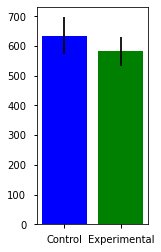
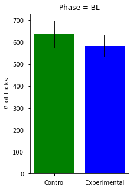
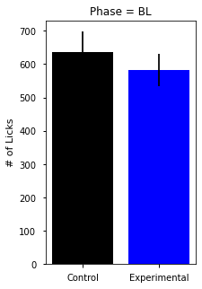
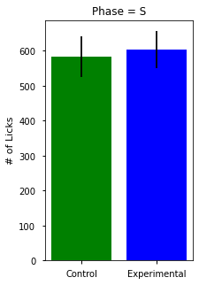
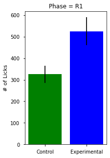
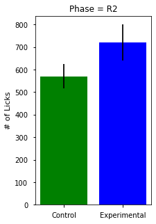
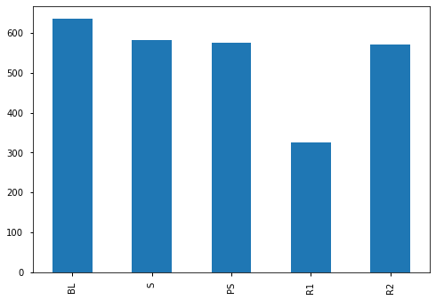
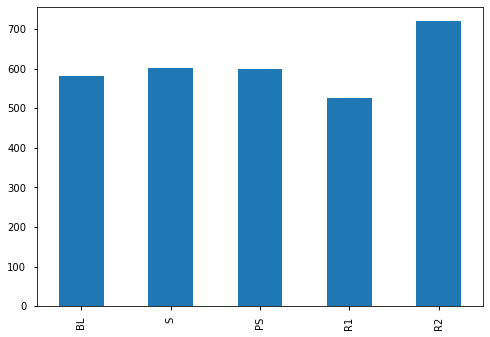
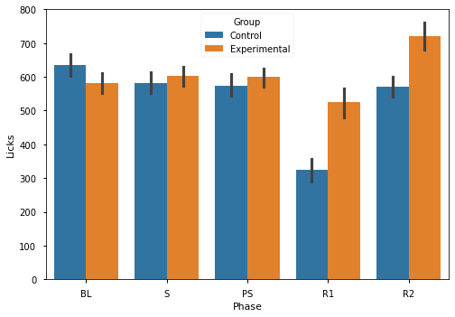
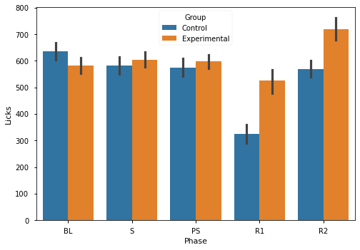

Topic 15: ANOVAs & Statistical Power with Neuro Data#
04/01/21
online-ds-ft-022221
Learning Objectives#
Revisit hypothesis testing using my neuroscience research data.
Learn about ANOVAs
Discuss the multiple comparison problem.
Discuss the multiple comparison problem and Tukey’s test
NOTES#
This notebook is intended to walk through preparing my binge drinking data for Hypothesis Testing
Specifically, in this notebook I will attempt to use the most appropriate stat tests, which are not taught in the Learn curriculum
Two way RM ANOVA
Repeated Measures ANOVA in Python
REFERENCES#
Hypothesis Testing Workflow:
Two-Way and RM ANOVA Resources
One-way RM ANOVA (other packages): https://www.marsja.se/repeated-measures-anova-using-python/
Two-Way: https://marsja.se/two-way-anova-repeated-measures-using-python/
HYPOTHESIS TESTING STEPS#
Separate data in group vars.
Visualize data and calculate group n (size)
Select the appropriate test based on type of comparison being made, the number of groups, the type of data.
For t-tests: test for the assumptions of normality and homogeneity of variance.
Check if sample sizes allow us to ignore assumptions, and if not:
Test Assumption Normality
Test for Homogeneity of Variance
Choose appropriate test based upon the above
Perform chosen statistical test, calculate effect size, and any post-hoc tests.
To perform post-hoc pairwise comparison testing
Effect size calculation
Cohen’s d
Statistical Tests Summary Table#
Parametric tests (means) |
Function |
Nonparametric tests (medians) |
Function |
|---|---|---|---|
1-sample t test |
|
1-sample Wilcoxon |
|
2-sample t test |
|
Mann-Whitney U test |
|
One-Way ANOVA |
|
Kruskal-Wallis |
|
| Factorial DOE with one factor and one blocking variable |Friedman test |
Real-World Science / Experimental Design#
The Role of Stress Neurons in the Amygdala in Addiction/Binge Drinking#
The Opponent-Process Theory of Addiction#

We will be talking through some of the experiments from my Postdoctoral research on the roll of stress neurons in the escalation of binge drinking.
James’ Neuroscience Research Poster: Society for Neuroscience 2016

Hypothesis#
Based on prior evidence in the field, stress neurons in the amygdala are believed to be responsible for the negative emotions that promote binge consumption to relieve negative symptoms
\( H_1\): Increasing the activity of stress neurons (CRF neurons) in the amygdala will increase the amount of alcohol consumed by binge-drinking mice.
\(H_0\): Stimulation of CRF neurons has no effect on the amount of alcohol consumed.

Experimental Design#


Hypothesis Testing: Mouse Data#
Hypothesis#
Question: does stimulation of CRF Neurons in the central amygdala increase alcohol consumption?
Metric: Average # of licks per phase.
Groups: Control / Experimental
\(H_1\): Experimental Mice will drink more/less than control mice after stimulation.
\(H_0\): Experimental mice and control mice drink the same amount after stimulation.
\(\alpha\)=0.05
Step 1: which type of test?#
What type of data?
Numerical (# of licks)
How many groups?
Control vs Experimental
Training Phases (BL,S,PS,R)
Let’s First Try to Treat this as 2-sample T-Tests (one for each phase)#
Obtaining/Preprocessing Data#
import numpy as np
import pandas as pd
import matplotlib.pyplot as plt
import seaborn as sns
from scipy import stats
plt.style.use('seaborn-notebook')
pd.set_option('display.max_columns',0)
pd.set_option('display.precision',3)
## Load in the mouse drinking data cleaned csv
df = pd.read_csv('mouse_drinking_data_cleaned.csv',
index_col=0)
df.drop('Sex',inplace=True,axis=1)
df
| Group | BL1 | BL2 | BL3 | BL4 | S1 | S2 | S3 | S4 | PS1 | PS2 | PS3 | PS4 | R1_1 | R1_2 | R1_3 | R1_4 | R2_1 | R2_2 | R2_3 | R2_4 | |
|---|---|---|---|---|---|---|---|---|---|---|---|---|---|---|---|---|---|---|---|---|---|
| Mouse_ID | |||||||||||||||||||||
| 1 | Control | 665 | 863 | 631 | 629 | 583 | 801 | 723 | 707 | 732 | 680 | 684 | 485 | 65 | 301 | 351 | 441 | 675 | 554 | 541 | 545 |
| 2 | Control | 859 | 849 | 685 | 731 | 854 | 1103 | 645 | 633 | 733 | 662 | 605 | 623 | 128 | 268 | 462 | 569 | 988 | 728 | 933 | 564 |
| 3 | Control | 589 | 507 | 635 | 902 | 699 | 743 | 761 | 949 | 872 | 952 | 828 | 806 | 129 | 311 | 669 | 666 | 516 | 579 | 913 | 736 |
| 4 | Control | 939 | 909 | 850 | 756 | 807 | 617 | 526 | 736 | 743 | 625 | 690 | 759 | 281 | 357 | 386 | 585 | 565 | 550 | 806 | 732 |
| 5 | Experimental | 710 | 505 | 494 | 596 | 620 | 589 | 676 | 537 | 779 | 537 | 581 | 515 | 477 | 659 | 737 | 606 | 713 | 682 | 709 | 759 |
| 6 | Experimental | 564 | 808 | 589 | 596 | 591 | 580 | 419 | 463 | 707 | 625 | 547 | 595 | 532 | 951 | 901 | 851 | 807 | 858 | 802 | 803 |
| 7 | Experimental | 722 | 732 | 783 | 946 | 882 | 723 | 764 | 892 | 621 | 764 | 720 | 478 | 297 | 558 | 803 | 694 | 855 | 797 | 938 | 878 |
| 8 | Experimental | 497 | 649 | 586 | 506 | 546 | 493 | 456 | 601 | 437 | 462 | 704 | 498 | 10 | 44 | 86 | 284 | 212 | 133 | 141 | 274 |
| 9 | Experimental | 741 | 668 | 778 | 638 | 759 | 791 | 568 | 664 | 390 | 346 | 773 | 682 | 3 | 212 | 417 | 443 | 486 | 444 | 533 | 578 |
| 10 | Experimental | 953 | 988 | 579 | 706 | 1106 | 812 | 902 | 835 | 829 | 801 | 1011 | 919 | 274 | 559 | 840 | 890 | 724 | 793 | 559 | 700 |
| 11 | Experimental | 753 | 613 | 573 | 642 | 820 | 752 | 759 | 564 | 635 | 641 | 706 | 763 | 287 | 526 | 841 | 838 | 691 | 657 | 680 | 781 |
| 12 | Control | 494 | 602 | 570 | 530 | 570 | 396 | 403 | 380 | 362 | 467 | 491 | 557 | 98 | 262 | 344 | 388 | 435 | 551 | 552 | 537 |
| 13 | Control | 587 | 630 | 564 | 627 | 572 | 419 | 369 | 416 | 403 | 552 | 575 | 589 | 172 | 298 | 422 | 596 | 447 | 589 | 463 | 364 |
| 14 | Control | 917 | 680 | 737 | 596 | 699 | 484 | 452 | 438 | 547 | 729 | 830 | 411 | 71 | 386 | 581 | 832 | 586 | 610 | 634 | 716 |
| 15 | Control | 440 | 767 | 642 | 623 | 532 | 663 | 601 | 553 | 315 | 434 | 543 | 619 | 115 | 101 | 356 | 457 | 412 | 582 | 549 | 696 |
| 16 | Experimental | 715 | 469 | 392 | 333 | 492 | 594 | 695 | 568 | 916 | 675 | 669 | 895 | 98 | 558 | 977 | 956 | 974 | 1049 | 1366 | 942 |
| 17 | Experimental | 184 | 250 | 373 | 457 | 505 | 475 | 519 | 578 | 542 | 477 | 601 | 390 | 131 | 656 | 845 | 699 | 494 | 920 | 431 | 521 |
| 18 | Experimental | 934 | 1237 | 354 | 705 | 646 | 619 | 885 | 626 | 496 | 954 | 718 | 821 | 170 | 909 | 1049 | 994 | 675 | 803 | 866 | 880 |
| 19 | Experimental | 578 | 548 | 556 | 479 | 533 | 721 | 651 | 546 | 537 | 564 | 519 | 446 | 601 | 565 | 450 | 684 | 1675 | 976 | 1249 | 1047 |
| 20 | Experimental | 400 | 193 | 188 | 350 | 232 | 34 | 65 | 158 | 89 | 175 | 186 | 319 | 14 | 60 | 118 | 149 | 133 | 270 | 472 | 293 |
| 21 | Experimental | 448 | 221 | 505 | 459 | 483 | 491 | 394 | 673 | 593 | 444 | 430 | 630 | 176 | 611 | 680 | 552 | 652 | 879 | 990 | 900 |
| 22 | Control | 270 | 132 | 250 | 192 | 364 | 229 | 219 | 329 | 120 | 147 | 186 | 337 | 8 | 70 | 18 | 175 | 232 | 238 | 209 | 200 |
Laying Out Our Approach#
We need to average all 4 session of the same phase (BL,S,R1,R2) for each mouse…
Make a dict/lists of the column names that should be averaged together (
col_dict)Make a new df of means using
col_dictMake a grp dict using
df_means.groupby('Group').groups
Visualize the two populations
Prepare for hypothesis tests
Either use
grpsdict to reference the correct columsn to pass into tests
df.columns
Index(['Group', 'BL1', 'BL2', 'BL3', 'BL4', 'S1', 'S2', 'S3', 'S4', 'PS1',
'PS2', 'PS3', 'PS4', 'R1_1', 'R1_2', 'R1_3', 'R1_4', 'R2_1', 'R2_2',
'R2_3', 'R2_4'],
dtype='object')
## Loop through the differnet phases of the experiment
phases = ['BL','S','PS','R1','R2']
## save corresponding column names as values
col_dict = {}
for phase in phases:
col_dict[phase]= [col for col in df.columns if col.startswith(phase)]
col_dict
{'BL': ['BL1', 'BL2', 'BL3', 'BL4'],
'S': ['S1', 'S2', 'S3', 'S4'],
'PS': ['PS1', 'PS2', 'PS3', 'PS4'],
'R1': ['R1_1', 'R1_2', 'R1_3', 'R1_4'],
'R2': ['R2_1', 'R2_2', 'R2_3', 'R2_4']}
## Get then opposite of col_dict
Calculating individual mouse means by phase#
df[col_dict['BL']]
| BL1 | BL2 | BL3 | BL4 | |
|---|---|---|---|---|
| Mouse_ID | ||||
| 1 | 665 | 863 | 631 | 629 |
| 2 | 859 | 849 | 685 | 731 |
| 3 | 589 | 507 | 635 | 902 |
| 4 | 939 | 909 | 850 | 756 |
| 5 | 710 | 505 | 494 | 596 |
| 6 | 564 | 808 | 589 | 596 |
| 7 | 722 | 732 | 783 | 946 |
| 8 | 497 | 649 | 586 | 506 |
| 9 | 741 | 668 | 778 | 638 |
| 10 | 953 | 988 | 579 | 706 |
| 11 | 753 | 613 | 573 | 642 |
| 12 | 494 | 602 | 570 | 530 |
| 13 | 587 | 630 | 564 | 627 |
| 14 | 917 | 680 | 737 | 596 |
| 15 | 440 | 767 | 642 | 623 |
| 16 | 715 | 469 | 392 | 333 |
| 17 | 184 | 250 | 373 | 457 |
| 18 | 934 | 1237 | 354 | 705 |
| 19 | 578 | 548 | 556 | 479 |
| 20 | 400 | 193 | 188 | 350 |
| 21 | 448 | 221 | 505 | 459 |
| 22 | 270 | 132 | 250 | 192 |
## calculate the mean for all BL columns for each mouse
df[col_dict['BL']].mean(axis=1)
Mouse_ID
1 697.00
2 781.00
3 658.25
4 863.50
5 576.25
6 639.25
7 795.75
8 559.50
9 706.25
10 806.50
11 645.25
12 549.00
13 602.00
14 732.50
15 618.00
16 477.25
17 316.00
18 807.50
19 540.25
20 282.75
21 408.25
22 211.00
dtype: float64
## Make a new df_means with just the mouse id and group first
df_means = df[['Group']].copy()
df_means
| Group | |
|---|---|
| Mouse_ID | |
| 1 | Control |
| 2 | Control |
| 3 | Control |
| 4 | Control |
| 5 | Experimental |
| 6 | Experimental |
| 7 | Experimental |
| 8 | Experimental |
| 9 | Experimental |
| 10 | Experimental |
| 11 | Experimental |
| 12 | Control |
| 13 | Control |
| 14 | Control |
| 15 | Control |
| 16 | Experimental |
| 17 | Experimental |
| 18 | Experimental |
| 19 | Experimental |
| 20 | Experimental |
| 21 | Experimental |
| 22 | Control |
col_dict
{'BL': ['BL1', 'BL2', 'BL3', 'BL4'],
'S': ['S1', 'S2', 'S3', 'S4'],
'PS': ['PS1', 'PS2', 'PS3', 'PS4'],
'R1': ['R1_1', 'R1_2', 'R1_3', 'R1_4'],
'R2': ['R2_1', 'R2_2', 'R2_3', 'R2_4']}
## Loop through col_dict and calcualte the means for each phase for each mouse
for phase, cols in col_dict.items():
df_means[phase] = df[col_dict[phase]].mean(axis=1)
df_means
| Group | BL | S | PS | R1 | R2 | |
|---|---|---|---|---|---|---|
| Mouse_ID | ||||||
| 1 | Control | 697.00 | 703.50 | 645.25 | 289.50 | 578.75 |
| 2 | Control | 781.00 | 808.75 | 655.75 | 356.75 | 803.25 |
| 3 | Control | 658.25 | 788.00 | 864.50 | 443.75 | 686.00 |
| 4 | Control | 863.50 | 671.50 | 704.25 | 402.25 | 663.25 |
| 5 | Experimental | 576.25 | 605.50 | 603.00 | 619.75 | 715.75 |
| 6 | Experimental | 639.25 | 513.25 | 618.50 | 808.75 | 817.50 |
| 7 | Experimental | 795.75 | 815.25 | 645.75 | 588.00 | 867.00 |
| 8 | Experimental | 559.50 | 524.00 | 525.25 | 106.00 | 190.00 |
| 9 | Experimental | 706.25 | 695.50 | 547.75 | 268.75 | 510.25 |
| 10 | Experimental | 806.50 | 913.75 | 890.00 | 640.75 | 694.00 |
| 11 | Experimental | 645.25 | 723.75 | 686.25 | 623.00 | 702.25 |
| 12 | Control | 549.00 | 437.25 | 469.25 | 273.00 | 518.75 |
| 13 | Control | 602.00 | 444.00 | 529.75 | 372.00 | 465.75 |
| 14 | Control | 732.50 | 518.25 | 629.25 | 467.50 | 636.50 |
| 15 | Control | 618.00 | 587.25 | 477.75 | 257.25 | 559.75 |
| 16 | Experimental | 477.25 | 587.25 | 788.75 | 647.25 | 1082.75 |
| 17 | Experimental | 316.00 | 519.25 | 502.50 | 582.75 | 591.50 |
| 18 | Experimental | 807.50 | 694.00 | 747.25 | 780.50 | 806.00 |
| 19 | Experimental | 540.25 | 612.75 | 516.50 | 575.00 | 1236.75 |
| 20 | Experimental | 282.75 | 122.25 | 192.25 | 85.25 | 292.00 |
| 21 | Experimental | 408.25 | 510.25 | 524.25 | 504.75 | 855.25 |
| 22 | Control | 211.00 | 285.25 | 197.50 | 67.75 | 219.75 |
Getting Group Data For EDA & Testing#
## Use groupby.groups
grps = df_means.groupby('Group').groups
grps
{'Control': [1, 2, 3, 4, 12, 13, 14, 15, 22], 'Experimental': [5, 6, 7, 8, 9, 10, 11, 16, 17, 18, 19, 20, 21]}
## Make an empty data dict
data = {}
## For each group and its row numbers
for grp,row_nums in grps.items():
## Save the group df as grp name
data[grp ] = df_means.loc[row_nums]
# Display data
display(data[grp].head().style.set_caption(grp))
| Group | BL | S | PS | R1 | R2 | |
|---|---|---|---|---|---|---|
| Mouse_ID | ||||||
| 1 | Control | 697.000 | 703.500 | 645.250 | 289.500 | 578.750 |
| 2 | Control | 781.000 | 808.750 | 655.750 | 356.750 | 803.250 |
| 3 | Control | 658.250 | 788.000 | 864.500 | 443.750 | 686.000 |
| 4 | Control | 863.500 | 671.500 | 704.250 | 402.250 | 663.250 |
| 12 | Control | 549.000 | 437.250 | 469.250 | 273.000 | 518.750 |
| Group | BL | S | PS | R1 | R2 | |
|---|---|---|---|---|---|---|
| Mouse_ID | ||||||
| 5 | Experimental | 576.250 | 605.500 | 603.000 | 619.750 | 715.750 |
| 6 | Experimental | 639.250 | 513.250 | 618.500 | 808.750 | 817.500 |
| 7 | Experimental | 795.750 | 815.250 | 645.750 | 588.000 | 867.000 |
| 8 | Experimental | 559.500 | 524.000 | 525.250 | 106.000 | 190.000 |
| 9 | Experimental | 706.250 | 695.500 | 547.750 | 268.750 | 510.250 |
sns.barplot
<function seaborn.categorical.barplot(*, x=None, y=None, hue=None, data=None, order=None, hue_order=None, estimator=<function mean at 0x7ffa80389a60>, ci=95, n_boot=1000, units=None, seed=None, orient=None, color=None, palette=None, saturation=0.75, errcolor='.26', errwidth=None, capsize=None, dodge=True, ax=None, **kwargs)>
Plotting Group Means + Standard Error of the Mean#
from scipy.stats import sem
## Select a phase to visualize
phase = 'BL'
## Create lists for saving x,y, and yerr
x = []
y = []
y_err = []
# For each group
for group_name in data:
## grab the correct phasen col from group data
grp_data = data[group_name][phase]
## Save x,y
x.append(group_name)
y.append(grp_data.mean())
## Calc and save error
y_err.append(sem(grp_data))
## plot with matplotlib
fig, ax = plt.subplots(figsize=(2,4))
ax.bar(x,y,yerr=y_err,color=['b','g'])
<BarContainer object of 2 artists>

## Functionize
from scipy.stats import sem
def plot_bars_yerr(data,phase = "BL"):
"""Plots the group means +/- standard error of the mean."""
## Save x,y, and yerr
x = []
y = []
y_err = []
for group in data:
grp_data = data[group][phase]
x.append(f"{group}")
y.append(grp_data.mean())
y_err.append(sem(grp_data))
fig,ax = plt.subplots(figsize=(3,5))
ax.bar(x,y,yerr=y_err,color=['g','b'])
ax.set_title(f"Phase = {phase}")
ax.set(ylabel='# of Licks')
return fig,ax
## test function
plot_bars_yerr(data)
(<Figure size 216x360 with 1 Axes>,
<AxesSubplot:title={'center':'Phase = BL'}, ylabel='# of Licks'>)

Run 2-sample T-Test on Baseline Days#
test_phase = "BL"
f,a = plot_bars_yerr(data,phase)

Test Assumptions#
from scipy import stats
phase='BL'
## Make list of list of headers
results = [['Phase','Group','N','Stat Test','stat','p','sig?']]
## Make an empty list for our group data
levenes_test = []
## Loop through the data dictionary
for grp, grp_df in data.items():
## Grab the correct phase column from the group df
grp_data = grp_df[phase].copy()
levenes_test.append(grp_data)
## Test for nomrality and save result
stat,p = stats.normaltest(grp_data)
## save results
results.append([phase,grp, len(grp_df),'normality',stat,p, p<.05])
results
/opt/anaconda3/envs/learn-env-new/lib/python3.8/site-packages/scipy/stats/stats.py:1603: UserWarning: kurtosistest only valid for n>=20 ... continuing anyway, n=9
warnings.warn("kurtosistest only valid for n>=20 ... continuing "
/opt/anaconda3/envs/learn-env-new/lib/python3.8/site-packages/scipy/stats/stats.py:1603: UserWarning: kurtosistest only valid for n>=20 ... continuing anyway, n=13
warnings.warn("kurtosistest only valid for n>=20 ... continuing "
[['Phase', 'Group', 'N', 'Stat Test', 'stat', 'p', 'sig?'],
['BL',
'Control',
9,
'normality',
8.254723372420806,
0.016125366526865192,
True],
['BL',
'Experimental',
13,
'normality',
0.7897193225624515,
0.6737745892767993,
False]]
pd.DataFrame(results[1:],columns=results[0])
| Phase | Group | N | Stat Test | stat | p | sig? | |
|---|---|---|---|---|---|---|---|
| 0 | BL | Control | 9 | normality | 8.255 | 0.016 | True |
| 1 | BL | Experimental | 13 | normality | 0.790 | 0.674 | False |
Adding Levene’s Test#
from scipy import stats
phase='BL'
## Make list of list of headers
results = [['Phase','Group','N','Stat Test','stat','p','sig?']]
## Make an empty list for our group data
levenes_test = []
## Loop through the data dictionary
for grp, grp_df in data.items():
## Grab the correct phase column from the group df
grp_data = grp_df[phase].copy()
levenes_test.append(grp_data)
## Test for nomrality and save result
stat,p = stats.normaltest(grp_data)
## save results
results.append([phase,grp, len(grp_df),'normality',stat,p, p<.05])
## Add LEvens' test
stat, p = stats.levene(*levenes_test)
results.append([phase,'all','-','Equal Variance',stat,p,p<.05])
results_df =pd.DataFrame(results[1:],columns=results[0])
results_df
/opt/anaconda3/envs/learn-env-new/lib/python3.8/site-packages/scipy/stats/stats.py:1603: UserWarning: kurtosistest only valid for n>=20 ... continuing anyway, n=9
warnings.warn("kurtosistest only valid for n>=20 ... continuing "
/opt/anaconda3/envs/learn-env-new/lib/python3.8/site-packages/scipy/stats/stats.py:1603: UserWarning: kurtosistest only valid for n>=20 ... continuing anyway, n=13
warnings.warn("kurtosistest only valid for n>=20 ... continuing "
| Phase | Group | N | Stat Test | stat | p | sig? | |
|---|---|---|---|---|---|---|---|
| 0 | BL | Control | 9 | normality | 8.255 | 0.016 | True |
| 1 | BL | Experimental | 13 | normality | 0.790 | 0.674 | False |
| 2 | BL | all | - | Equal Variance | 0.131 | 0.721 | False |
Run Correct Test#
Since we failed assumption of normality, we will perform the Mann Whitney U test instead of the 2-sample t-test
## visualize one more time and run the correct test
## Functionize code for testing other phases
def test_assumptions(data,test_phase):#,plot=True):
## Make list of list of headers
results = [['Phase','Group','n','Test Name','Test Stat','p','sig?']]
## Make an empty list for our group data
test_equal_var = []
## Loop through the data dictionary
for grp,grp_df in data.items():
## Grab the correct phase column from the group df
grp_data = grp_df[test_phase].copy()
## Append group data to list of group data
test_equal_var.append(grp_data)
## Test for nomrality and save result
stat,p = stats.normaltest(grp_data)
results.append([test_phase, grp,len(grp_data),'normality',stat,p,p<.05])
## Test for equal variance
stat, p = stats.levene(*test_equal_var)
results.append([test_phase,'-','-','Equal Variance',stat,p,p<.05])
results_df = pd.DataFrame(results[1:],columns=results[0])
return results_df
## Using our two functions, plot and test the asssumptions for S phase
plot_bars_yerr(data,'BL')
test_assumptions(data,'BL')
/opt/anaconda3/envs/learn-env-new/lib/python3.8/site-packages/scipy/stats/stats.py:1603: UserWarning: kurtosistest only valid for n>=20 ... continuing anyway, n=9
warnings.warn("kurtosistest only valid for n>=20 ... continuing "
/opt/anaconda3/envs/learn-env-new/lib/python3.8/site-packages/scipy/stats/stats.py:1603: UserWarning: kurtosistest only valid for n>=20 ... continuing anyway, n=13
warnings.warn("kurtosistest only valid for n>=20 ... continuing "
| Phase | Group | n | Test Name | Test Stat | p | sig? | |
|---|---|---|---|---|---|---|---|
| 0 | BL | Control | 9 | normality | 8.255 | 0.016 | True |
| 1 | BL | Experimental | 13 | normality | 0.790 | 0.674 | False |
| 2 | BL | - | - | Equal Variance | 0.131 | 0.721 | False |
Make a final function to use both of the above#
def test_and_plot_phase(data,phase):
res_df = test_assumptions(data,phase)
f,a = plot_bars_yerr(data,phase)
display(res_df)
plt.show()
Using our functions, evaluate each phase’s assumption tests and select the correct hypothesis test#
## BL
test_and_plot_phase(data,'BL')
stats.mannwhitneyu(data['Control']['BL'],
data['Experimental']['BL'])
/opt/anaconda3/envs/learn-env-new/lib/python3.8/site-packages/scipy/stats/stats.py:1603: UserWarning: kurtosistest only valid for n>=20 ... continuing anyway, n=9
warnings.warn("kurtosistest only valid for n>=20 ... continuing "
/opt/anaconda3/envs/learn-env-new/lib/python3.8/site-packages/scipy/stats/stats.py:1603: UserWarning: kurtosistest only valid for n>=20 ... continuing anyway, n=13
warnings.warn("kurtosistest only valid for n>=20 ... continuing "
| Phase | Group | n | Test Name | Test Stat | p | sig? | |
|---|---|---|---|---|---|---|---|
| 0 | BL | Control | 9 | normality | 8.255 | 0.016 | True |
| 1 | BL | Experimental | 13 | normality | 0.790 | 0.674 | False |
| 2 | BL | - | - | Equal Variance | 0.131 | 0.721 | False |
MannwhitneyuResult(statistic=47.0, pvalue=0.23130417364131195)
# S
test_and_plot_phase(data,'S')
stats.mannwhitneyu(data['Control']['S'],
data['Experimental']['S'])
/opt/anaconda3/envs/learn-env-new/lib/python3.8/site-packages/scipy/stats/stats.py:1603: UserWarning: kurtosistest only valid for n>=20 ... continuing anyway, n=9
warnings.warn("kurtosistest only valid for n>=20 ... continuing "
/opt/anaconda3/envs/learn-env-new/lib/python3.8/site-packages/scipy/stats/stats.py:1603: UserWarning: kurtosistest only valid for n>=20 ... continuing anyway, n=13
warnings.warn("kurtosistest only valid for n>=20 ... continuing "
| Phase | Group | n | Test Name | Test Stat | p | sig? | |
|---|---|---|---|---|---|---|---|
| 0 | S | Control | 9 | normality | 0.490 | 0.783 | False |
| 1 | S | Experimental | 13 | normality | 6.533 | 0.038 | True |
| 2 | S | - | - | Equal Variance | 0.072 | 0.791 | False |

MannwhitneyuResult(statistic=51.5, pvalue=0.3320788807684706)
# R1
test_and_plot_phase(data,'R1')
stats.ttest_ind(data['Control']['R1'],
data['Experimental']['R1'])
/opt/anaconda3/envs/learn-env-new/lib/python3.8/site-packages/scipy/stats/stats.py:1603: UserWarning: kurtosistest only valid for n>=20 ... continuing anyway, n=9
warnings.warn("kurtosistest only valid for n>=20 ... continuing "
/opt/anaconda3/envs/learn-env-new/lib/python3.8/site-packages/scipy/stats/stats.py:1603: UserWarning: kurtosistest only valid for n>=20 ... continuing anyway, n=13
warnings.warn("kurtosistest only valid for n>=20 ... continuing "
| Phase | Group | n | Test Name | Test Stat | p | sig? | |
|---|---|---|---|---|---|---|---|
| 0 | R1 | Control | 9 | normality | 3.932 | 0.140 | False |
| 1 | R1 | Experimental | 13 | normality | 3.078 | 0.215 | False |
| 2 | R1 | - | - | Equal Variance | 1.026 | 0.323 | False |

Ttest_indResult(statistic=-2.3712598087477406, pvalue=0.02788240296608544)
#R2
test_and_plot_phase(data,'R2')
stats.ttest_ind(data['Control']['R2'],
data['Experimental']['R2'])
/opt/anaconda3/envs/learn-env-new/lib/python3.8/site-packages/scipy/stats/stats.py:1603: UserWarning: kurtosistest only valid for n>=20 ... continuing anyway, n=9
warnings.warn("kurtosistest only valid for n>=20 ... continuing "
/opt/anaconda3/envs/learn-env-new/lib/python3.8/site-packages/scipy/stats/stats.py:1603: UserWarning: kurtosistest only valid for n>=20 ... continuing anyway, n=13
warnings.warn("kurtosistest only valid for n>=20 ... continuing "
| Phase | Group | n | Test Name | Test Stat | p | sig? | |
|---|---|---|---|---|---|---|---|
| 0 | R2 | Control | 9 | normality | 4.193 | 0.123 | False |
| 1 | R2 | Experimental | 13 | normality | 0.325 | 0.850 | False |
| 2 | R2 | - | - | Equal Variance | 1.730 | 0.203 | False |

Ttest_indResult(statistic=-1.412066452609746, pvalue=0.17330114036439856)
ANOVA#
Let’s analyze the difference between phases for an ANOVA
Run One-Way ANOVAs with Scipy#
One for Control Mice
One for Experimental Mice
data['Control']['BL']
Mouse_ID
1 697.00
2 781.00
3 658.25
4 863.50
12 549.00
13 602.00
14 732.50
15 618.00
22 211.00
Name: BL, dtype: float64
## Run f_oneway
stats.f_oneway(data['Control']['BL'],
data['Control']['S'],
data['Control']['R1'],
data['Control']['R2'])
F_onewayResult(statistic=6.376000275714917, pvalue=0.0016400902609930025)
data['Control'].drop(columns='Group').mean().plot(kind='bar')
<AxesSubplot:>

## Run f_oneway
stats.f_oneway(data['Experimental']['BL'],
data['Experimental']['S'],
data['Experimental']['R1'],
data['Experimental']['R2'])
F_onewayResult(statistic=1.7233218231284195, pvalue=0.17472593698289063)
data['Experimental'].drop(columns='Group').mean().plot(kind='bar')
<AxesSubplot:>

compare the two p-values
Two-Way ANOVA with Statsmodels#
Melting a dataframe#
https://pandas.pydata.org/docs/reference/api/pandas.melt.html
to_melt = df.reset_index().copy()
to_melt
| Mouse_ID | Group | BL1 | BL2 | BL3 | BL4 | S1 | S2 | S3 | S4 | PS1 | PS2 | PS3 | PS4 | R1_1 | R1_2 | R1_3 | R1_4 | R2_1 | R2_2 | R2_3 | R2_4 | |
|---|---|---|---|---|---|---|---|---|---|---|---|---|---|---|---|---|---|---|---|---|---|---|
| 0 | 1 | Control | 665 | 863 | 631 | 629 | 583 | 801 | 723 | 707 | 732 | 680 | 684 | 485 | 65 | 301 | 351 | 441 | 675 | 554 | 541 | 545 |
| 1 | 2 | Control | 859 | 849 | 685 | 731 | 854 | 1103 | 645 | 633 | 733 | 662 | 605 | 623 | 128 | 268 | 462 | 569 | 988 | 728 | 933 | 564 |
| 2 | 3 | Control | 589 | 507 | 635 | 902 | 699 | 743 | 761 | 949 | 872 | 952 | 828 | 806 | 129 | 311 | 669 | 666 | 516 | 579 | 913 | 736 |
| 3 | 4 | Control | 939 | 909 | 850 | 756 | 807 | 617 | 526 | 736 | 743 | 625 | 690 | 759 | 281 | 357 | 386 | 585 | 565 | 550 | 806 | 732 |
| 4 | 5 | Experimental | 710 | 505 | 494 | 596 | 620 | 589 | 676 | 537 | 779 | 537 | 581 | 515 | 477 | 659 | 737 | 606 | 713 | 682 | 709 | 759 |
| 5 | 6 | Experimental | 564 | 808 | 589 | 596 | 591 | 580 | 419 | 463 | 707 | 625 | 547 | 595 | 532 | 951 | 901 | 851 | 807 | 858 | 802 | 803 |
| 6 | 7 | Experimental | 722 | 732 | 783 | 946 | 882 | 723 | 764 | 892 | 621 | 764 | 720 | 478 | 297 | 558 | 803 | 694 | 855 | 797 | 938 | 878 |
| 7 | 8 | Experimental | 497 | 649 | 586 | 506 | 546 | 493 | 456 | 601 | 437 | 462 | 704 | 498 | 10 | 44 | 86 | 284 | 212 | 133 | 141 | 274 |
| 8 | 9 | Experimental | 741 | 668 | 778 | 638 | 759 | 791 | 568 | 664 | 390 | 346 | 773 | 682 | 3 | 212 | 417 | 443 | 486 | 444 | 533 | 578 |
| 9 | 10 | Experimental | 953 | 988 | 579 | 706 | 1106 | 812 | 902 | 835 | 829 | 801 | 1011 | 919 | 274 | 559 | 840 | 890 | 724 | 793 | 559 | 700 |
| 10 | 11 | Experimental | 753 | 613 | 573 | 642 | 820 | 752 | 759 | 564 | 635 | 641 | 706 | 763 | 287 | 526 | 841 | 838 | 691 | 657 | 680 | 781 |
| 11 | 12 | Control | 494 | 602 | 570 | 530 | 570 | 396 | 403 | 380 | 362 | 467 | 491 | 557 | 98 | 262 | 344 | 388 | 435 | 551 | 552 | 537 |
| 12 | 13 | Control | 587 | 630 | 564 | 627 | 572 | 419 | 369 | 416 | 403 | 552 | 575 | 589 | 172 | 298 | 422 | 596 | 447 | 589 | 463 | 364 |
| 13 | 14 | Control | 917 | 680 | 737 | 596 | 699 | 484 | 452 | 438 | 547 | 729 | 830 | 411 | 71 | 386 | 581 | 832 | 586 | 610 | 634 | 716 |
| 14 | 15 | Control | 440 | 767 | 642 | 623 | 532 | 663 | 601 | 553 | 315 | 434 | 543 | 619 | 115 | 101 | 356 | 457 | 412 | 582 | 549 | 696 |
| 15 | 16 | Experimental | 715 | 469 | 392 | 333 | 492 | 594 | 695 | 568 | 916 | 675 | 669 | 895 | 98 | 558 | 977 | 956 | 974 | 1049 | 1366 | 942 |
| 16 | 17 | Experimental | 184 | 250 | 373 | 457 | 505 | 475 | 519 | 578 | 542 | 477 | 601 | 390 | 131 | 656 | 845 | 699 | 494 | 920 | 431 | 521 |
| 17 | 18 | Experimental | 934 | 1237 | 354 | 705 | 646 | 619 | 885 | 626 | 496 | 954 | 718 | 821 | 170 | 909 | 1049 | 994 | 675 | 803 | 866 | 880 |
| 18 | 19 | Experimental | 578 | 548 | 556 | 479 | 533 | 721 | 651 | 546 | 537 | 564 | 519 | 446 | 601 | 565 | 450 | 684 | 1675 | 976 | 1249 | 1047 |
| 19 | 20 | Experimental | 400 | 193 | 188 | 350 | 232 | 34 | 65 | 158 | 89 | 175 | 186 | 319 | 14 | 60 | 118 | 149 | 133 | 270 | 472 | 293 |
| 20 | 21 | Experimental | 448 | 221 | 505 | 459 | 483 | 491 | 394 | 673 | 593 | 444 | 430 | 630 | 176 | 611 | 680 | 552 | 652 | 879 | 990 | 900 |
| 21 | 22 | Control | 270 | 132 | 250 | 192 | 364 | 229 | 219 | 329 | 120 | 147 | 186 | 337 | 8 | 70 | 18 | 175 | 232 | 238 | 209 | 200 |
## melt to create df2
df2 = pd.melt(to_melt,id_vars=['Mouse_ID','Group'],var_name='Day',
value_name='Licks')
df2
| Mouse_ID | Group | Day | Licks | |
|---|---|---|---|---|
| 0 | 1 | Control | BL1 | 665 |
| 1 | 2 | Control | BL1 | 859 |
| 2 | 3 | Control | BL1 | 589 |
| 3 | 4 | Control | BL1 | 939 |
| 4 | 5 | Experimental | BL1 | 710 |
| ... | ... | ... | ... | ... |
| 435 | 18 | Experimental | R2_4 | 880 |
| 436 | 19 | Experimental | R2_4 | 1047 |
| 437 | 20 | Experimental | R2_4 | 293 |
| 438 | 21 | Experimental | R2_4 | 900 |
| 439 | 22 | Control | R2_4 | 200 |
440 rows × 4 columns
## Get then opposite of col_dict
phase_dict = {}
for phase,colnames in col_dict.items():
for col in colnames:
phase_dict[col] = phase
phase_dict
{'BL1': 'BL',
'BL2': 'BL',
'BL3': 'BL',
'BL4': 'BL',
'S1': 'S',
'S2': 'S',
'S3': 'S',
'S4': 'S',
'PS1': 'PS',
'PS2': 'PS',
'PS3': 'PS',
'PS4': 'PS',
'R1_1': 'R1',
'R1_2': 'R1',
'R1_3': 'R1',
'R1_4': 'R1',
'R2_1': 'R2',
'R2_2': 'R2',
'R2_3': 'R2',
'R2_4': 'R2'}
## Mapping Phase from Phase Dict
df2['Phase'] = df2['Day'].map(phase_dict)
## Getting Day of Phase
df2['Day_of_Phase'] = df2['Day'].apply(lambda x: x[-1])
df2
| Mouse_ID | Group | Day | Licks | Phase | Day_of_Phase | |
|---|---|---|---|---|---|---|
| 0 | 1 | Control | BL1 | 665 | BL | 1 |
| 1 | 2 | Control | BL1 | 859 | BL | 1 |
| 2 | 3 | Control | BL1 | 589 | BL | 1 |
| 3 | 4 | Control | BL1 | 939 | BL | 1 |
| 4 | 5 | Experimental | BL1 | 710 | BL | 1 |
| ... | ... | ... | ... | ... | ... | ... |
| 435 | 18 | Experimental | R2_4 | 880 | R2 | 4 |
| 436 | 19 | Experimental | R2_4 | 1047 | R2 | 4 |
| 437 | 20 | Experimental | R2_4 | 293 | R2 | 4 |
| 438 | 21 | Experimental | R2_4 | 900 | R2 | 4 |
| 439 | 22 | Control | R2_4 | 200 | R2 | 4 |
440 rows × 6 columns
## Now that we melted the data, use sns.barplot!
sns.barplot(data=df2,x='Phase',y='Licks',hue='Group',ci=68)
<AxesSubplot:xlabel='Phase', ylabel='Licks'>

Create an OLS Model to Run an ANOVA#
import statsmodels.api as sm
from statsmodels.formula.api import ols
df2.head()
| Mouse_ID | Group | Day | Licks | Phase | Day_of_Phase | |
|---|---|---|---|---|---|---|
| 0 | 1 | Control | BL1 | 665 | BL | 1 |
| 1 | 2 | Control | BL1 | 859 | BL | 1 |
| 2 | 3 | Control | BL1 | 589 | BL | 1 |
| 3 | 4 | Control | BL1 | 939 | BL | 1 |
| 4 | 5 | Experimental | BL1 | 710 | BL | 1 |
## define formula for model and fit
formula = "Licks~C(Group)+C(Phase)"
lm = ols(formula, df2).fit()
lm
<statsmodels.regression.linear_model.RegressionResultsWrapper at 0x7ffa6af44af0>
## create the two way ANOVA table
sm.stats.anova_lm(lm, typ=2).round(5)
| sum_sq | df | F | PR(>F) | |
|---|---|---|---|---|
| C(Group) | 4.951e+05 | 1.0 | 8.970 | 0.003 |
| C(Phase) | 2.254e+06 | 4.0 | 10.209 | 0.000 |
| Residual | 2.396e+07 | 434.0 | NaN | NaN |
Tukey’s Multiple Comparison Test#
## Follow up with
from statsmodels.stats.multicomp import pairwise_tukeyhsd
pairwise_tukeyhsd
<function statsmodels.stats.multicomp.pairwise_tukeyhsd(endog, groups, alpha=0.05)>
## create a Group-Phase column for tukey
df2['Group-Phase'] = df2['Group'] +'-'+df2['Phase']
df2
| Mouse_ID | Group | Day | Licks | Phase | Day_of_Phase | Group-Phase | |
|---|---|---|---|---|---|---|---|
| 0 | 1 | Control | BL1 | 665 | BL | 1 | Control-BL |
| 1 | 2 | Control | BL1 | 859 | BL | 1 | Control-BL |
| 2 | 3 | Control | BL1 | 589 | BL | 1 | Control-BL |
| 3 | 4 | Control | BL1 | 939 | BL | 1 | Control-BL |
| 4 | 5 | Experimental | BL1 | 710 | BL | 1 | Experimental-BL |
| ... | ... | ... | ... | ... | ... | ... | ... |
| 435 | 18 | Experimental | R2_4 | 880 | R2 | 4 | Experimental-R2 |
| 436 | 19 | Experimental | R2_4 | 1047 | R2 | 4 | Experimental-R2 |
| 437 | 20 | Experimental | R2_4 | 293 | R2 | 4 | Experimental-R2 |
| 438 | 21 | Experimental | R2_4 | 900 | R2 | 4 | Experimental-R2 |
| 439 | 22 | Control | R2_4 | 200 | R2 | 4 | Control-R2 |
440 rows × 7 columns
sns.barplot(data=df2,x='Phase',y='Licks',hue='Group',ci=68)
<AxesSubplot:xlabel='Phase', ylabel='Licks'>

res = pairwise_tukeyhsd(df2['Licks'],df2['Group-Phase'])
res.summary()
| group1 | group2 | meandiff | p-adj | lower | upper | reject |
|---|---|---|---|---|---|---|
| Control-BL | Control-PS | -59.8889 | 0.9 | -233.4175 | 113.6397 | False |
| Control-BL | Control-R1 | -309.1667 | 0.001 | -482.6953 | -135.638 | True |
| Control-BL | Control-R2 | -64.5 | 0.9 | -238.0286 | 109.0286 | False |
| Control-BL | Control-S | -52.0556 | 0.9 | -225.5842 | 121.4731 | False |
| Control-BL | Experimental-BL | -53.0983 | 0.9 | -212.7214 | 106.5248 | False |
| Control-BL | Experimental-PS | -35.6175 | 0.9 | -195.2406 | 124.0056 | False |
| Control-BL | Experimental-R1 | -109.2714 | 0.4762 | -268.8945 | 50.3518 | False |
| Control-BL | Experimental-R2 | 85.3825 | 0.7679 | -74.2406 | 245.0056 | False |
| Control-BL | Experimental-S | -31.8675 | 0.9 | -191.4906 | 127.7556 | False |
| Control-PS | Control-R1 | -249.2778 | 0.001 | -422.8064 | -75.7491 | True |
| Control-PS | Control-R2 | -4.6111 | 0.9 | -178.1397 | 168.9175 | False |
| Control-PS | Control-S | 7.8333 | 0.9 | -165.6953 | 181.362 | False |
| Control-PS | Experimental-BL | 6.7906 | 0.9 | -152.8325 | 166.4137 | False |
| Control-PS | Experimental-PS | 24.2714 | 0.9 | -135.3518 | 183.8945 | False |
| Control-PS | Experimental-R1 | -49.3825 | 0.9 | -209.0056 | 110.2406 | False |
| Control-PS | Experimental-R2 | 145.2714 | 0.1105 | -14.3518 | 304.8945 | False |
| Control-PS | Experimental-S | 28.0214 | 0.9 | -131.6018 | 187.6445 | False |
| Control-R1 | Control-R2 | 244.6667 | 0.001 | 71.138 | 418.1953 | True |
| Control-R1 | Control-S | 257.1111 | 0.001 | 83.5825 | 430.6397 | True |
| Control-R1 | Experimental-BL | 256.0684 | 0.001 | 96.4453 | 415.6915 | True |
| Control-R1 | Experimental-PS | 273.5491 | 0.001 | 113.926 | 433.1723 | True |
| Control-R1 | Experimental-R1 | 199.8953 | 0.0032 | 40.2722 | 359.5184 | True |
| Control-R1 | Experimental-R2 | 394.5491 | 0.001 | 234.926 | 554.1723 | True |
| Control-R1 | Experimental-S | 277.2991 | 0.001 | 117.676 | 436.9223 | True |
| Control-R2 | Control-S | 12.4444 | 0.9 | -161.0842 | 185.9731 | False |
| Control-R2 | Experimental-BL | 11.4017 | 0.9 | -148.2214 | 171.0248 | False |
| Control-R2 | Experimental-PS | 28.8825 | 0.9 | -130.7406 | 188.5056 | False |
| Control-R2 | Experimental-R1 | -44.7714 | 0.9 | -204.3945 | 114.8518 | False |
| Control-R2 | Experimental-R2 | 149.8825 | 0.0869 | -9.7406 | 309.5056 | False |
| Control-R2 | Experimental-S | 32.6325 | 0.9 | -126.9906 | 192.2556 | False |
| Control-S | Experimental-BL | -1.0427 | 0.9 | -160.6659 | 158.5804 | False |
| Control-S | Experimental-PS | 16.438 | 0.9 | -143.1851 | 176.0612 | False |
| Control-S | Experimental-R1 | -57.2158 | 0.9 | -216.8389 | 102.4073 | False |
| Control-S | Experimental-R2 | 137.438 | 0.162 | -22.1851 | 297.0612 | False |
| Control-S | Experimental-S | 20.188 | 0.9 | -139.4351 | 179.8112 | False |
| Experimental-BL | Experimental-PS | 17.4808 | 0.9 | -126.9038 | 161.8653 | False |
| Experimental-BL | Experimental-R1 | -56.1731 | 0.9 | -200.5576 | 88.2115 | False |
| Experimental-BL | Experimental-R2 | 138.4808 | 0.073 | -5.9038 | 282.8653 | False |
| Experimental-BL | Experimental-S | 21.2308 | 0.9 | -123.1538 | 165.6153 | False |
| Experimental-PS | Experimental-R1 | -73.6538 | 0.816 | -218.0384 | 70.7307 | False |
| Experimental-PS | Experimental-R2 | 121.0 | 0.1912 | -23.3845 | 265.3845 | False |
| Experimental-PS | Experimental-S | 3.75 | 0.9 | -140.6345 | 148.1345 | False |
| Experimental-R1 | Experimental-R2 | 194.6538 | 0.001 | 50.2693 | 339.0384 | True |
| Experimental-R1 | Experimental-S | 77.4038 | 0.7656 | -66.9807 | 221.7884 | False |
| Experimental-R2 | Experimental-S | -117.25 | 0.2292 | -261.6345 | 27.1345 | False |
The CORRECT Test: Repeated Measures ANOVA#
from statsmodels.stats.anova import AnovaRM
aovrm = AnovaRM(df2, depvar='Licks', subject='Mouse_ID',
within=['Phase'],
between='Groups')
res = aovrm.fit()
print(res)
---------------------------------------------------------------------------
NotImplementedError Traceback (most recent call last)
<ipython-input-92-816a2a48a30c> in <module>
1 from statsmodels.stats.anova import AnovaRM
2
----> 3 aovrm = AnovaRM(df2, depvar='Licks', subject='Mouse_ID',
4 within=['Phase'],
5 between='Groups')
/opt/anaconda3/envs/learn-env-new/lib/python3.8/site-packages/statsmodels/stats/anova.py in __init__(self, data, depvar, subject, within, between, aggregate_func)
485 self.between = between
486 if between is not None:
--> 487 raise NotImplementedError('Between subject effect not '
488 'yet supported!')
489 self.subject = subject
NotImplementedError: Between subject effect not yet supported!
CONCLUSION#
Running the correct test according to the assumptions of normality and equal variance will ensure you can get the correct test result.
Notice how the last phase (R) did NOT come back as significant when we ran the t-test, but DID come back significant when we performed the Mann Whitney U instead.
(https://www.statsmodels.org/stable/generated/statsmodels.stats.multicomp.pairwise_tukeyhsd.html)